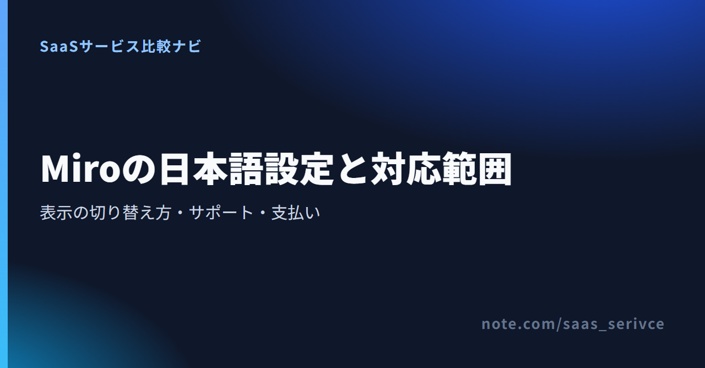

Miroを開いてもメニューが英語のままで、設定場所が見つからない。画面を日本語に変えた後も、ボード上のすべてが翻訳されるのか、日本語で問い合わせられるのかという疑問は残ります。
Miroのブラウザ版は日本語表示に切り替えられます。ただし、日本語になるのは主にボード、ダッシュボード、設定の画面です。一部の機能やアセットには英語が残る場合があります。また、日本語UIに対応していても、日本語の有人サポートを受けられるとは限りません。
設定手順をログイン済みユーザーとアカウントを持たない参加者に分け、日本語になる範囲、問い合わせ、請求書、日本からの支払いまで整理します。
Miroは、ブラウザ版のボード、ダッシュボード、設定で日本語を選べます。 英語表示のままでも、プロフィール設定のLanguageから変更できます。
画面を日本語にするだけなら、有料プランへの変更は必要ありません。Freeプランでも言語設定を変更できるため、まず無料で表示を確かめられます。
Miroの日本語サイトから無料で利用を始められます。アカウントを作成したら、プロフィールで表示言語を変更できます。
ログインしている人はプロフィール設定、Miroに未登録の参加者は共有されたボードの設定から言語を切り替えます。ログイン状態によって、設定を開く場所が異なります。
アカウントにログインできる場合は、プロフィールのLanguageを変更します。
言語はアカウントごとの設定です。チーム全体の画面が一括で日本語になるわけではないため、利用者ごとにプロフィールを確認してください。
招待リンクからボードへ入り、Miroアカウントを作らずに参加している場合も、表示言語を選べます。
未登録の参加者へ案内するときは、プロフィール設定ではなくボード設定を開くと伝えれば、ログイン済みユーザー向けの手順との混同を防げます。
プロフィール設定は、ダッシュボードとボードのどちらからでも開けます。ダッシュボードではプロフィールメニューからProfile settingsを開き、Languageへ進みます。ボードを開いている場合は、Main menuからPreferences、Profile settingsの順に進み、Languageで日本語を指定します。
メニューの配置が変わった場合も、画面上の位置ではなくProfile settingsとLanguageという項目名を手がかりに探すと、迷いにくくなります。
公式の日本語サイトから、プロフィール設定と未登録ユーザー向けの言語変更案内を確認できます。
日本語設定は、Miro上のすべての文字を翻訳する機能ではありません。操作画面と、ボード内の文章や外部ファイルを分けて考える必要があります。
日本語の対象は、ブラウザ版のボード、ダッシュボード、設定です。メニュー項目を日本語でたどれるため、英語の項目名を毎回調べる負担は減ります。
設定は自分のプロフィールにひもづきます。同じチームでも、別の利用者が英語を選んでいれば、その人の画面まで日本語に変わるわけではありません。
言語設定で変わるのは操作画面の表示です。すでにボードへ書かれた文章を自動翻訳する設定ではありません。
ボード内の文章や外部ファイルの内容は、UIを日本語に切り替えても変わりません。画面の表示言語とボード内で使う言語は別です。
Miroは、一部の機能やアセットでは多言語への反映が遅れる場合があると案内しています。
英語表記を使えない業務なら、Freeで実際に使う機能を開き、必要な画面まで日本語になっているかを確かめてから導入を判断します。
Languageが見つからないときは、ログイン状態、設定の入口、利用している環境の順に切り分けます。古い解説と現在の画面でメニュー配置が違っていても、まずプロフィール設定を探してください。
ログイン済みなら、プロフィールメニューからProfile settingsへ進みます。ボード内からはMain menu、Preferences、Profile settingsの順に開き、Languageの一覧に日本語があるかを確認します。
チームの管理画面を探しても、個人の表示言語は見つからないことがあります。表示言語は利用者ごとのプロフィールで選ぶため、まず個人設定を確認します。
プロフィール設定が表示されない場合は、アカウントにログインせずボードへ参加している可能性があります。この場合はボード設定を開き、「環境設定」から「言語」へ進みます。
未登録の参加者には、Board menuからPreferences、Languageの順に進む手順を案内します。プロフィールがない参加者には、ログイン済みユーザーと同じ項目は表示されません。
ブラウザ版では、ボード、ダッシュボード、設定が日本語表示の対象です。デスクトップアプリとタブレットアプリでも言語設定を利用できますが、一部に制限があります。
アプリで項目が見つからない場合は、ブラウザ版のProfile settingsでLanguageを変更します。Miroがブラウザの優先言語を自動検出する場合もありますが、表示が英語のままならLanguageで日本語を選びます。
日本語のヘルプ情報は用意されていますが、日本語で問い合わせれば必ず日本語で回答されるとは断定できません。支払いでは、カード決済後に受け取る請求書と、請求書払いを分けて考えます。
Miroには日本語版のHelp Centerがあり、言語設定や基本操作を日本語で調べられます。直接契約の有料利用者はMiro Supportへ日本語で問い合わせられます。ただし、日本語で回答される保証までは確認できません。日本語での有人対応が導入条件なら、回答言語を契約前に確かめる必要があります。
問い合わせ先はプランと契約経路で変わります。FreeとEducationの利用者はコミュニティまたはバグ報告、直接契約の有料利用者はMiro Support、販売代理店から購入した場合は代理店が窓口です。導入前の法人相談には営業窓口を利用します。
Miroはクレジットカードによる自動支払いに対応しています。支払い後の請求書・領収書は、BillingのInvoicesからダウンロードでき、請求先メールにも届きます。
請求書払いは年払いのみで、Starterは10席以上、Businessは5席以上が条件です。ただし、一部の国では新規に利用できず、日本の新規契約が対象になるかは公式情報から確認できません。請求書払いが必須なら、申し込み前に利用可否を問い合わせてください。
直接契約と法人相談は、公式サイトで入口が分かれています。請求書払いを希望する場合は、年払いと最低席数の条件を先に確認できます。
日本語表示を確かめるだけならFreeから始められます。有料化は、継続して編集するボード数や、非公開ボード、チーム向け機能が必要になってから検討します。
FreeはUS$0で、編集可能なボードは3件です。無料アカウントを作成したらLanguageを日本語に変え、ダッシュボード、ボード、設定の表示を確認します。
ボードの作成数については、公式ページ間で説明が一致していません。「無制限に作成・共有でき、直近3件が編集可能」という案内と、「3件に達した後は削除またはアップグレードまで新規作成できない」という案内があります。無料版では、確実に編集できる範囲を3件として判断するのが無難です。
日本語表示と3件までの編集可能ボードを試すならFreeで足ります。編集可能な非公開ボードを無制限に使い、Visitorにも編集を許可したい場合はStarterが候補です。複数Workspace、無制限のGuests、User groups、SSOが必要な組織はBusinessを検討します。
この記事では日本語設定と機能によるプランの境界に絞り、各プランの金額や人数別総額は料金記事へ分けます。
Free、Starter、Businessの機能差は、公式サイトで確認できます。非公開ボードとVisitor編集が必要ならStarter、複数WorkspaceやSSOまで必要ならBusinessが目安です。
Miroを続けるかどうかは、日本語UIで日常の操作をこなせるか、日本語での回答保証や日本での請求書払いを必須とするかで判断できます。比較候補にはFigJamやMuralがあります。比較するときは、UI、問い合わせ、請求条件を分けて確認します。
次の条件に当てはまるなら、Miroを候補に残せます。
特に、操作画面の日本語化が目的なら、Freeで確認してから判断できます。最初から有料プランを契約する必要はありません。
日本語での回答が保証された有人窓口、すべての機能を含む完全な日本語表示、日本で確実に使える請求書払いのいずれかが必須なら、FigJamやMuralも比較候補に入れます。
日本語UIを最優先する場合は、Miroで確認済みのボード、ダッシュボード、設定と同じ範囲が日本語になるかを比べます。日本語窓口を優先する場合は回答言語の保証、請求書払いを優先する場合は日本からの新規契約可否と最低席数を候補ごとに確認します。
Miroの日本語対応では、次の3点を押さえておきましょう。
主要画面の日本語化で足りるなら、Freeで表示を確かめてから有料化を判断できます。日本語での回答保証や日本での請求書払いが必須なら、申し込み前に条件を問い合わせます。
まずFreeでプロフィールのLanguageを日本語へ変更し、自分が使うボードと設定画面に英語がどれだけ残るかを確認したうえで、導入可否を判断できます。